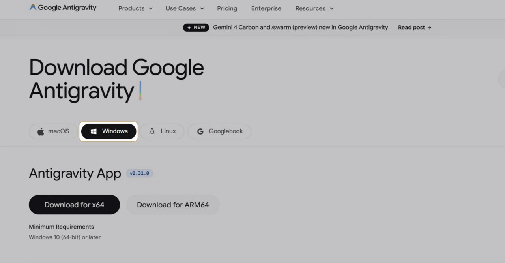
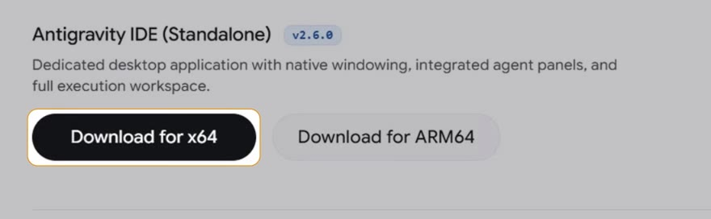
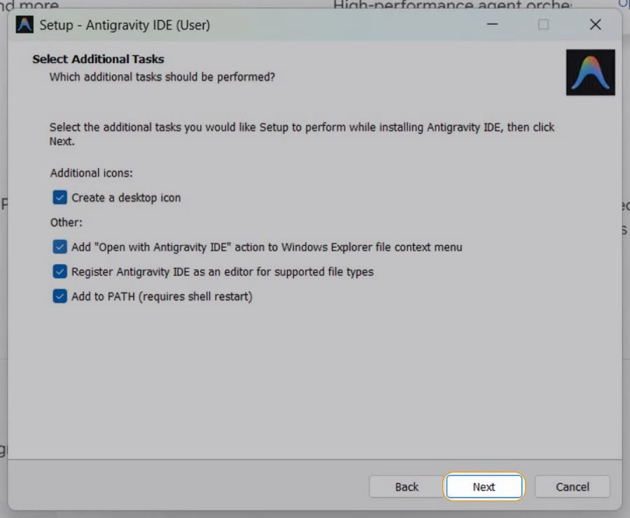
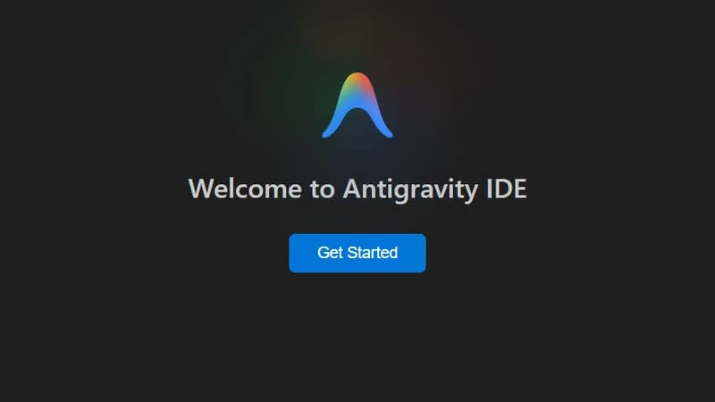
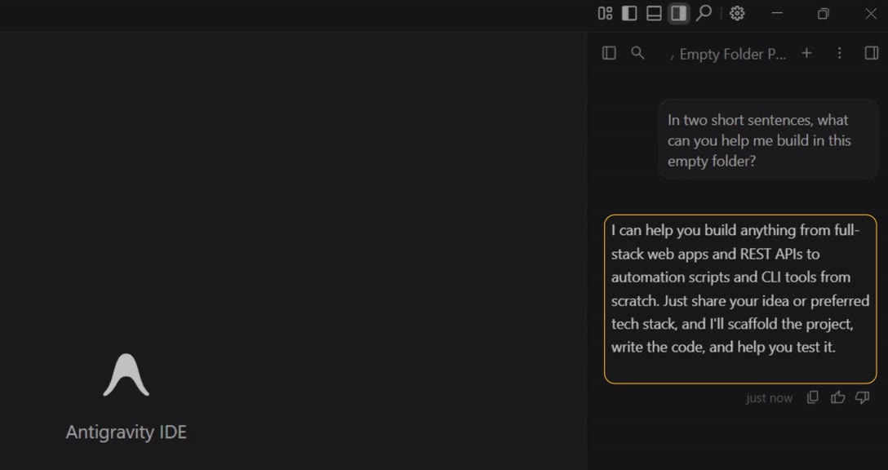

Prefer to watch? This post goes with the video (4:25). Open it on YouTube.
What you need first
Antigravity is a code editor from Google. You write code in it, and the agent inside it helps you build. Let's get it onto your PC.
You need two things:
- A Windows PC, Windows 10 (64-bit) or later. That is the minimum the download page lists.
- A Google account, to sign in with. If it uses 2-Step Verification, keep your phone close.
Download the right file
Open the download page
Go to antigravity.google/download, the official download page. You can also click Download on the home page. It opens with Windows already picked.

Find the editor, further down
Scroll down to Antigravity IDE (Standalone). That is the editor. Then click Download for x64.

Not sure whether your PC is x64 or ARM64? Most Windows PCs are x64. To check, open Settings, then System, then About, and read System type.
| System type says | Click |
|---|---|
| x64-based processor | Download for x64 |
| ARM-based processor | Download for ARM64 |
A short survey then asks how you heard about Antigravity. It is optional, so click Skip.
Run the installer
When the file has downloaded, click Open file in the browser's downloads list. The setup wizard opens.
Click through the wizard
Most screens need only Next. Here is each one in order:
- Accept the licence agreement, then Next.
- Keep the install folder it suggests, then Next.
- Keep the Start Menu folder, then Next.
- Pick the extra tasks, as in the table below, then Next.
- On Ready to Install, click Install.
- When it finishes, Launch Antigravity IDE is already ticked. Click Finish.

The tasks page is the only one with real choices. This is what each box does:
| Box | What it does | Our choice |
|---|---|---|
| Create a desktop icon | Puts Antigravity on your desktop | Tick it |
| Add "Open with Antigravity IDE" | Adds it to the right-click menu in File Explorer | Tick it |
| Register as an editor for supported file types | Lets Antigravity open code files | Leave it ticked |
| Add to PATH | Lets a terminal start Antigravity | Leave it ticked |
Sign in with Google
Antigravity opens on its welcome screen. Maximise the window, so you can see everything.

Get started and sign in
Click Get Started. It sets itself up for a moment, then asks you to sign in. Click Continue with Google, and your browser opens.
- Type the email of your Google account, then Next.
- Type your password, then Next.
- If your account uses 2-Step Verification, approve the sign-in on your phone.
- Google asks you to make sure you downloaded this app from Google. You did, from antigravity.google, so click Sign in.
- Google says you are signed in. The browser asks to open Antigravity IDE. Tick Always allow, then click Open.
Back in Antigravity, one last screen offers two opt-ins: sharing your usage to help improve it, and newsletters. Both are optional. We left them unticked. Then click Get started.
Open a folder and ask
Antigravity works inside a folder, so make one for it first.
- Click Open Folder.
- In the dialog, click New folder and name it
hello. - With
hellopicked, click Select folder.
It then asks: Do you trust the authors of the files in this folder? This is your own empty folder, so click Yes, I trust the authors.
Saying yes lets the agent run things in that folder. For a project you downloaded from someone else, choose No, I don't trust the authors. It still opens, in restricted mode.
The agent panel sits on the right. Type a first question into its box. This is the one we asked:

In a nutshell: anything from web apps to scripts. It sets up the project, writes the code and helps you test it. If you got an answer, the install worked.
A short tour
Five things you will use from day one. Each was tried in the hello folder.
| You want to | Do this |
|---|---|
| Add a file | Click the New File icon above the Explorer. Name it hello.txt, type a line and save with Ctrl+S. |
| Open a terminal | Open the Command Palette (View, then Command Palette) and search for toggle terminal. It opens inside your folder; type dir and your file is listed. |
| Make room on the screen | Toggle Primary Side Bar hides the Explorer and brings it back. Toggle Agent does the same for the agent panel. Both are small layout icons at the top right; hover over one to see its name. |
| Pick another model | Click the model name under the agent's box. On our screen, the list had Gemini, Claude and GPT models. |
| See how much you have left | In that same list, click View Usage. It shows what is left of your weekly limit and your 5-hour limit. |
Build a chatbot with it
Antigravity is installed, signed in and answering. Now it needs a real job. In our chatbot series, we use it to build a chatbot of our own, step by step.
The takeaway
- Download Antigravity IDE (Standalone), not the App at the top of the page.
- On the installer's tasks page, all four boxes can be ticked; the rest is Next.
- It works inside a folder: open your own, trust it, and ask the agent one question to check.
What will you build first with it?
Write it under the video on YouTube. Keep the answer; the chatbot series is a good place to start.
References
Where each step on this page comes from. Checked on 13 Nov 2026.
- Google — Download Google Antigravity. The Windows tab, the Antigravity App and Antigravity IDE (Standalone) downloads for x64 and ARM64, and the minimum requirement, Windows 10 (64-bit) or later. antigravity.google/download
- Microsoft — Windows Settings, System, About. The System type line says whether a PC has an x64-based or an ARM-based processor.
- My own install — November 2026, Windows 11. Every step, screen and answer on this page. I recorded them for the video, from the download to the model list.
New chapters and episodes come out every week. Follow along on YouTube or the WhatsApp channel. Questions? Ask under the video on YouTube; I read every comment.